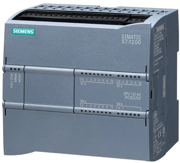

CLP

CLP é usado em automação industrial.
Entradas Digitais
Ligado ou desligado (24V).
Exemplo
Botão liga motor.
Entradas Analógicas
Leitura de sensores (0–10V).
Exemplo
Sensor de temperatura industrial.
Saída
Aciona motores, válvulas e relés.